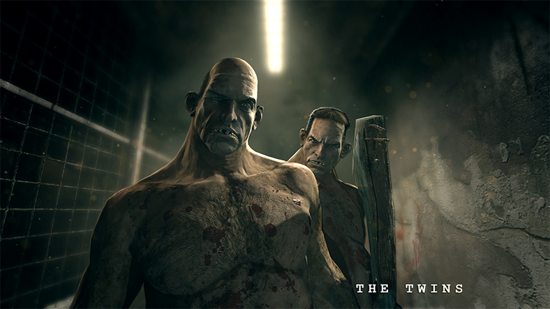

Burada sizlere "Hikayeli Oyunlar" tavsiye edeceğim.
İlk tavsiye ettiğim oyun: OUTLAST

Outlast, Red Barrels tarafından geliştirilen ve yayınlanmış bir birinci şahıs hayatta kalma-korku oyunudur. Oyunda, Miles Upshur adındaki bir gazetecinin Lake County, Colorado dağlarının derinliklerinde bulunan "Mount Massive Asylum" isimli garip olaylar olduğu konuşulan bir akıl hastanesini haber yapmak için bir el kamerası ile tek başına girdikten sonra yaşadığı olaylar oynanmaktadır. Oyunun ayrıca Whistleblower adında DLC'si vardır.
Sıradaki tavsiye ettiğim oyun ise: MAFİA TRILOGY
Mafia: The City of Lost Heaven, Illusion Softworks tarafından geliştirilen, Gathering of Developers tarafından yayınlanan bir aksiyon-macera video oyunudur. Oyun Microsoft Windows için Ağustos 2002'de piyasaya sürüldü ve daha sonra 2004'te Kuzey Amerika ve Avrupa'da PlayStation 2 ve Xbox konsollarına taşındı. Oyunun konusu, 1930'larda kurgusal bir mafya olan Tommy Angelo'nun yükselişi ve düşüşüdür. Oyun 1930 - 1938 tarihleri arasında geçmektedir.
30'lu yılları sonuna kadar yaşama fırsatı veren oyunda oyuncu; mafya dünyasına yeni adım atan birisini en tepeye kadar çıkarma fırsatına sahiptir. Mart 2008 tarihine kadar Take-Two Interactive'e göre 2 milyondan fazla kopya satmıştır. Şubat ve Mart, 2007'de Illusion Softworks, Leipzig Oyun Fuarında serinin ikinci oyunu olacak olan Mafia II'nin geliştirildiğini duyurmuştur.
Mafia, Microsoft Windows sürümü için olumlu eleştiriler aldı, eleştirmenler oyunu hikayesi ve gerçekçiliği için övdü, oyunun PlayStation 2 ve Xbox sürümleri karışık eleştiriler aldı. 2K Czech tarafından Mafia II, 24 Ağustos 2010'da piyasaya sürüldü ve Hangar 13 tarafından Mafia III, 7 Ekim 2016'da piyasaya sürüldü.
Son oyunumuz ise: RED DEAD REDEMPTION
Red Dead Redemption, aksiyon-macera türünde, açık uçlu bir oynanışa sahip bir oyundur. Oyuncuların John Marston adındaki karakteri üçüncü şahıs bakış açısından kontrol ettiği oyunda, oyuncular haritada istedikleri şekilde, serbestçe dolaşabilirken, çevredeki nesneler, insanlar ve hayvanlarda sürekli etkileşim halindedir.